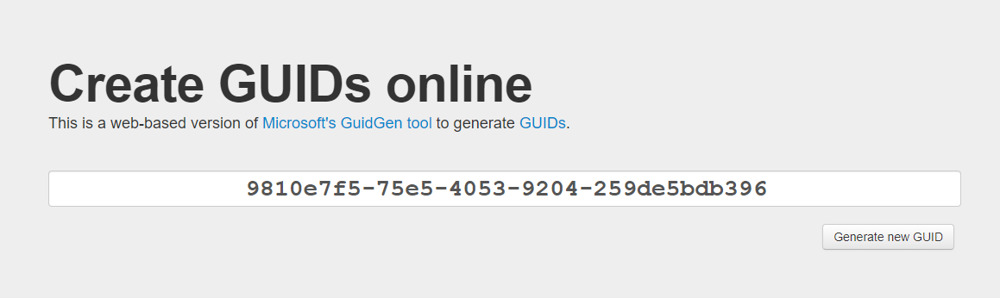
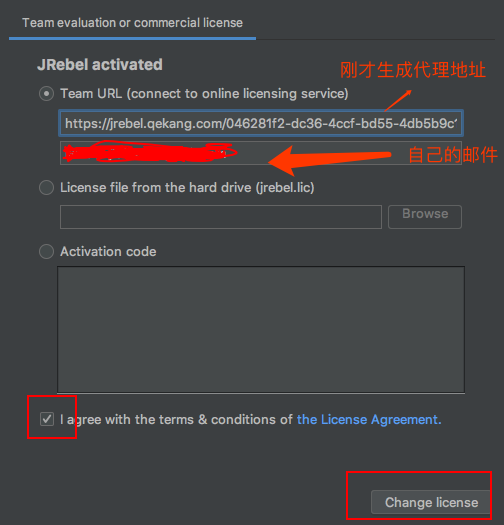
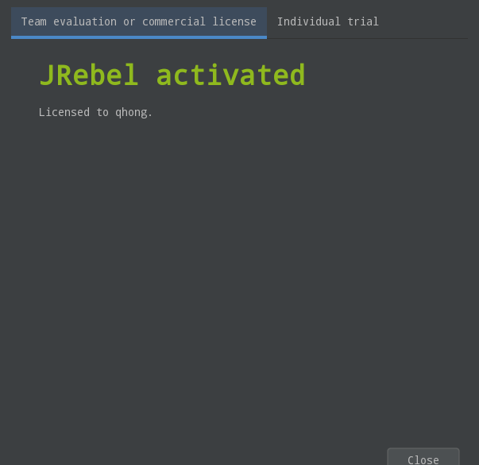
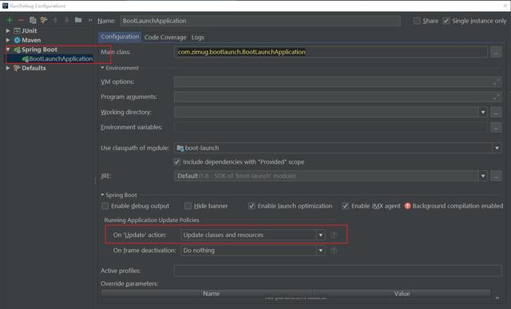
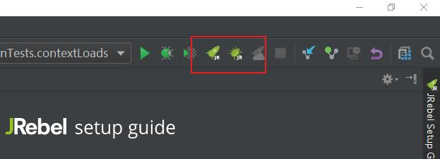

原文出处:本文由博客园博主字母哥博客提供。
原文连接:https://www.cnblogs.com/zimug/p/11774958.html
原文连接:https://www.cnblogs.com/zimug/p/11774958.html
如果经济实力允许的话，还是建议大家去购买收费版。支持原创作者，才能有更好的产品出现。
一、Jrebel插件介绍
JRebel一款帮助我们在开发过程中实现热加载的插件，目前来说，在IDEA中实现热加载最简单的方式就是使用Jrebel插件，我们修改代码之后不用重启应用，使代码能够立刻生效。本文将基于IntelliJ IDEA给大家讲解一下插件的破解方式。安装我就不讲了，IDEA的插件安装很简单。
安装过程可以看我的另外一篇文章：使用JRebel插件实现SpringBoot应用代码热加载
二、破解方法
破解过程分为两个步骤：
2.1.生成一个GUID
点击这里生成一个GUID：生成GUID的网址

然后将网址组成这样的URL格式： https://jrebel.qekang.com/{GUID} 供下一步使用，URL中的GUID用自己生成的字符串替换掉。
2.2.在线激活
通过在线的Jrebel激活服务https://jrebel.qekang.com 完成插件激活(这个激活的服务是别人的服务器，未来有可能失效)。不要通过浏览器访问，按图中的红色注释，完成激活的过程

激活成功之后显示下图：

三、如何使用
插件激活之后，就可以使用了。使用之前我们有必要进行一下项目启动的配置：


我们以后再启动项目，就使用IDEA右上角的JR按钮，不要使用以前的按钮了。

这样激活插件，并且完成配置之后，我们就可以使用快捷键 Ctrl+shift+F9实现代码的热加载，而不需要重启项目了！
期待您的关注
- 博主最近新写了一本书：《手摸手教您学习SpringBoot系列-16章97节》
- 本文转载注明出处（必须带连接，不能只转文字）：字母哥博客。